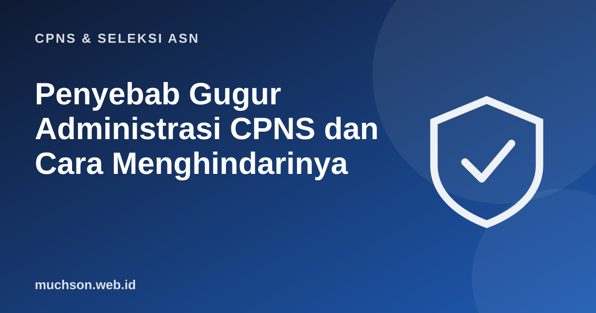

Beranda › Artikel › CPNS & Seleksi ASN
CPNS & Seleksi ASNPenyebab Gugur Administrasi CPNS dan Cara Menghindarinya
Ribuan pelamar gugur sebelum sempat mengerjakan satu soal pun, dan banyak penyebabnya bisa dicegah. Artikel ini merangkum syarat pelamar dan larangan pelamaran dari teks resmi PermenPANRB 6/2024, lalu mengubahnya menjadi daftar periksa yang bisa Anda pakai sebelum menekan tombol kirim.

Seleksi administrasi: dokumen dicocokkan dengan syarat
Tujuan seleksi administrasi adalah mencocokkan persyaratan administrasi dan kualifikasi dengan dokumen pelamaran. Jika dokumen tidak memenuhi persyaratan, pelamar dinyatakan tidak lulus (Pasal 28 ayat 1 dan 4). Hasilnya diumumkan terbuka oleh panitia seleksi instansi, dan yang lulus melanjutkan ke SKD.
Akun SSCASN CPNS 2026 sudah dibuka sejak 14 November 2026, tetapi jadwal pendaftaran formasi belum diumumkan resmi per 17 November. Gunakan waktu ini untuk menyiapkan dokumen. Persyaratan khusus tiap jabatan selalu ada pada pengumuman formasi instansi, dan itu yang berlaku.
Syarat umum pelamar (Pasal 23)
Ada 11 butir syarat umum. Semuanya harus terpenuhi pada saat melamar, ditambah persyaratan khusus jabatan.
| Syarat | Isi aturan | Cara mengeceknya |
|---|---|---|
| Usia | Paling rendah 18 tahun dan paling tinggi 35 tahun saat melamar PNS; dapat dikecualikan untuk jabatan tertentu menurut peraturan | Hitung usia pada tanggal pendaftaran, bukan tanggal tes |
| Riwayat pidana | Tidak pernah dipidana penjara berdasarkan putusan berkekuatan hukum tetap karena tindak pidana dengan ancaman pidana penjara 2 tahun atau lebih | Siapkan dokumen pendukung sesuai ketentuan instansi |
| Riwayat pemberhentian | Tidak pernah diberhentikan dengan hormat tidak atas permintaan sendiri atau tidak dengan hormat sebagai PNS, PPPK, TNI, Polri, atau diberhentikan tidak dengan hormat sebagai pegawai swasta | Periksa riwayat kerja Anda |
| Status kepegawaian | Tidak berkedudukan sebagai calon PNS, PNS, prajurit TNI, atau anggota Polri | Calon PNS, PNS, TNI, Polri tidak boleh melamar |
| Politik | Tidak menjadi anggota atau pengurus partai politik atau terlibat politik praktis | Pastikan tidak tercatat sebagai pengurus |
| Kualifikasi pendidikan | Sesuai dengan persyaratan jabatan | Cocokkan jurusan dan jenjang dengan pengumuman formasi |
| Sertifikasi | Sertifikasi keahlian tertentu yang masih berlaku bila jabatan mempersyaratkan | Periksa masa berlaku sertifikat |
| Kesehatan | Sehat jasmani dan rohani sesuai persyaratan jabatan | Baca syarat kesehatan khusus jabatan |
| Penempatan | Bersedia ditempatkan di seluruh wilayah NKRI atau negara lain yang ditentukan instansi | Pastikan Anda benar-benar bersedia sebelum melamar |
| Persyaratan lain | Sesuai kebutuhan jabatan yang ditetapkan PPK | Baca pengumuman formasi sampai habis |
Pasal 24 menambahkan beberapa ketentuan: pelamar tidak pernah melakukan atau terlibat pelanggaran seleksi, dan tidak berstatus peserta lulus seleksi calon ASN yang sedang dalam proses pengusulan nomor induk pegawai.
Aturan pelamaran yang paling sering menggugurkan
Pasal 25 membatasi pelamaran, dan pelanggarannya langsung berakibat gugur. Inilah bagian yang paling perlu diwaspadai karena kesalahannya terjadi di tangan pelamar sendiri.
Deskripsi teks diagram
Boleh
- Melamar satu jenis pengadaan: PNS atau PPPK
- Melamar satu instansi
- Melamar satu jenis jabatan
- Memakai satu nomor identitas kependudukan
- Mengajukan sanggah via SSCASN dalam 3 hari kalender
Tidak boleh, berisiko gugur
- Melamar PNS sekaligus PPPK pada tahun anggaran yang sama
- Melamar lebih dari satu instansi
- Melamar lebih dari satu jenis jabatan
- Memakai dua nomor identitas kependudukan berbeda
- Membantu atau melakukan kecurangan
Pelamar yang diketahui melamar lebih dari satu instansi, jenis pengadaan, atau jabatan, atau memakai dua nomor identitas kependudukan berbeda, dianggap gugur dan dapat dikenai sanksi sesuai peraturan perundang-undangan (Pasal 25 ayat 5).
Kesalahan yang sering terjadi dan pencegahannya
Jika tetap dinyatakan tidak lulus administrasi: masa sanggah
Pelamar yang keberatan dapat mengajukan sanggahan paling lama 3 hari kalender sejak hasil seleksi administrasi diumumkan, melalui SSCASN (Pasal 29 ayat 1 dan 2). Panitia dapat menerima alasan sanggahan jika kesalahan bukan berasal dari pelamar, dan dapat menolaknya jika kesalahan berasal dari pelamar. Bila diterima, hasil diumumkan ulang paling lama 7 hari kalender sejak berakhirnya waktu sanggah.
Deskripsi teks diagram
- Hari 0: Hasil seleksi administrasi diumumkan. Periksa status Anda di SSCASN
- Hari 1 sampai 3: Masa sanggah. Sanggah diajukan lewat SSCASN, paling lama 3 hari kalender
- Setelah hari 3: Panitia memutuskan. Diterima bila bukan kesalahan pelamar
- Paling lama +7 hari: Pengumuman ulang. Jika sanggah diterima
Karena sanggah hanya diterima untuk kesalahan yang bukan berasal dari pelamar, kesalahan input sendiri hampir tidak bisa dibetulkan setelah lewat. Memeriksa ulang sebelum mengirim jauh lebih efektif daripada mengandalkan sanggah.
Daftar periksa sebelum menekan kirim
Administrasi lolos bukan akhir cerita. SKD berikutnya menuntut ambang batas per subtes. Paket tryout SKD pertama di LolosSeleksi gratis untuk mengukur posisi Anda sejak sekarang, sebelum jadwal resmi terbit.
Tanya jawab
Berapa batas usia pelamar CPNS?
Bolehkah melamar CPNS dan PPPK pada tahun yang sama?
Boleh mendaftar lebih dari satu instansi?
Apakah anggota TNI, Polri, atau PNS boleh melamar CPNS?
Berapa lama waktu sanggah administrasi?
Apakah persyaratan khusus tiap jabatan sama?
Referensi
- Peraturan Menteri PANRB Nomor 6 Tahun 2024 tentang Pengadaan Pegawai ASN (teks resmi, BKN) (membuka tab baru)
- Peraturan Menteri PANRB 6/2024, status berlaku dan mencabut Permen 27/2021 (peraturan.bpk.go.id) (membuka tab baru)
- Kompas.com, 16 November 2026: registrasi akun SSCASN CPNS 2026 dibuka, jadwal pendaftaran belum diumumkan (membuka tab baru)